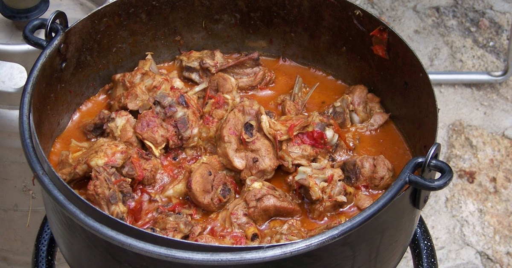
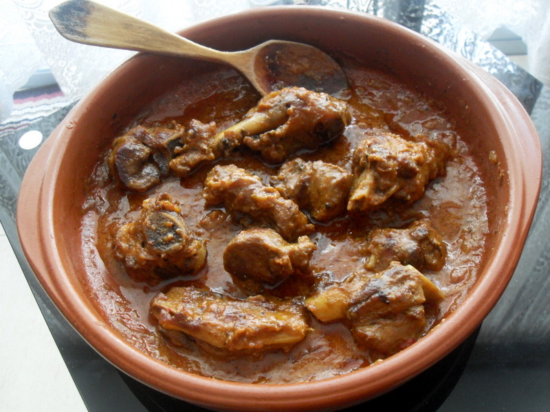
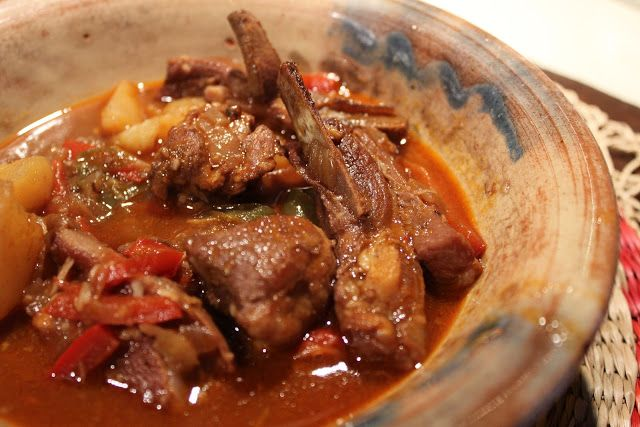

La Caldereta
El guiso de cordero más emblemático de la cocina extremeña.
Deténgase un momento y deje que el aroma le envuelva. En Herrera del Duque, la gastronomía no es solo alimento; es un rito que se huele, se saborea y, sobre todo, se comparte. Le invitamos a descubrir el plato más representativo de nuestra identidad: la caldereta de cordero.
Una receta con acento propio: El sello de La Siberia
Aunque la caldereta es el referente gastronómico por excelencia de la región de Extremadura, en Herrera del Duque, en plena Reserva de la Biosfera de La Siberia, el plato adquiere matices únicos que lo distinguen de otras variantes:
Cordero frente a Cabrito: A diferencia de las zonas del norte extremeño (como las Hurdes o Sierra de Gata) donde es muy común el uso del cabrito, en Herrera apostamos por la intensidad y ternura del cordero, criado en las dehesas que rodean nuestros embalses.
El secreto del Majado: El rasgo distintivo de nuestra cocina es la densidad y untuosidad de su salsa. Mientras que en otros puntos de la región se opta por guisos más ligeros, aquí utilizamos el majado de hígado. Se asan las vísceras y se machacan en el mortero con ajos fritos, pimienta y un toque de vino blanco o vinagre. Este proceso "liga" la salsa, dándole su característico color pardo y un sabor profundo.
Ingredientes de proximidad: El uso del aceite de oliva virgen extra de la zona y el imprescindible Pimentón de la Vera completan una receta que es puro paisaje en el plato.
Valor Patrimonial: Un legado de pastores
La caldereta no nació en las cocinas de la nobleza, sino al aire libre, bajo el cobijo de una encina. Es un tesoro del patrimonio cultural inmaterial de Extremadura que hunde sus raíces en la vida de los pastores trashumantes.
Desde un punto de vista histórico, este era un plato de supervivencia. Los pastores, que pasaban meses lejos de sus hogares, utilizaban herramientas mínimas: una caldera de hierro, fuego de leña y los ingredientes básicos que podían transportar en sus alforjas. Cuando un animal no podía seguir el ritmo del rebaño, se convertía en el sustento del grupo, cocinado lentamente para ablandar la carne.
Hoy, ese origen humilde es el que otorga al plato su valor más auténtico: representa el aprovechamiento máximo de los recursos y la sabiduría de un pueblo que convirtió la necesidad en un arte social.
Mucho más que un plato
En cada casa y en cada celebración de Herrera del Duque, la caldereta sigue siendo el vínculo que reúne a familias, amigos y visitantes. Cada cucharada es un viaje por la historia de un pueblo que sabe honrar sus raíces y su forma de entender la vida: con calma, respeto a la tierra y una hospitalidad inmensa.
Si tiene la oportunidad, déjese llevar por su sabor. Porque en la caldereta de Herrera del Duque, no solo se degusta un guiso; se vive nuestra tradición.
Galería de fotos


